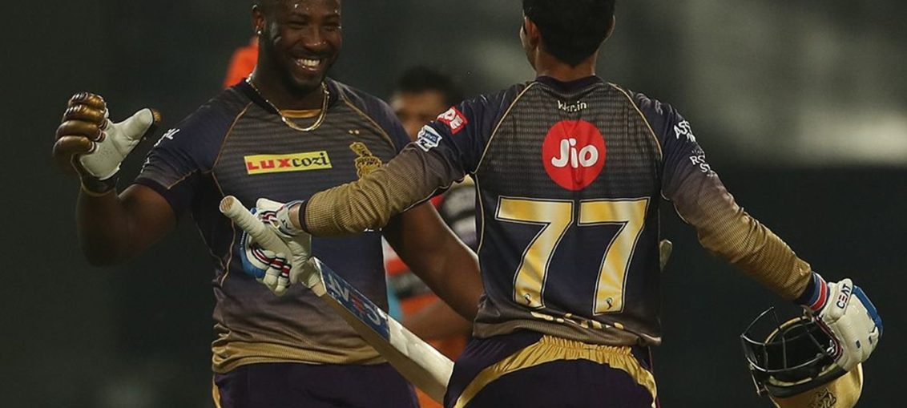

Posted at Date: April 30, 2019
Credit : রাইট স্পোর্টস ওয়েব ডেস্ক
কেকেআরকে পাঁচে তুলে জন্মদিন পালন রাসেলের

কেকেআর –২৩২/২ (লিন ৫৪, গিল ৭৬, রাসেল অপরাজিত ৮০)
মুম্বই ইন্ডিয়ান্স – ১৯৮/৭ (হার্দিক ৯১, রাসেল ২/২৫)
কেকেআর ইনিংসের শেষ ওভারের চতুর্থ বল। লাসিথ মালিঙ্গার বল লং অফে পাঠিয়েছিলেন আন্দ্রে রাসেল। এক রান নিশ্চিন্তে। এগিয়ে এসেছিলেন অধিনায়ক দীনেশ কার্তিক। ‘না না’ বলে এমনভাবে ফেরত পাঠালেন রাসেল, বলা হয়ে গেল অনেক কিছু! কিন্তু, কার্তিক যে অধিনায়ক। আগের ম্যাচে এই মাঠেই ৫০ বলে অপরাজিত ৯৭ রানের দুর্দান্ত ইনিংস খেলেছিলেন। মালিঙ্গার পরের বল ইয়র্কার। ডিপ পয়েন্টে পাঠালেন। পরপর দুটো বলে শেষ ওভারে রান নেবেন না, ব্যাপারটা ভাল হবে না ভেবে এবার রাসেল নিজে রান নিতে চেয়েছিলেন। রাসেলের মতো ভঙ্গিতে নয়, কিন্তু কার্তিক এবার রান নিতে আগ্রহী হলেন না! মধুরেণ সমাপয়েৎ হল মালিঙ্গার শেষ বল রাসেল লং অফের ওপর দিয়ে তুলে আইপিএল-এ এবারের সর্বোচ্চ ২৩২ রানে ইনিংস পৌঁছে দেওয়ায়। কিন্তু রাসেল বনাম কার্তিক ওই দু-বলের লড়াইটা বড্ড দৃষ্টিকটু! অর্থহীনও। দলের অধিনায়ক কখনও কি নিজের সেরা অস্ত্রকে এভাবে কম ব্যবহারে নষ্ট করতে আগ্রহী হয় কখনও? কার্তিক তা-ই করে চলেছিলেন। একা কার্তিককেও দোষ দিয়ে লাভ নেই। কলকাতার দল পরিচালন সমিতি তা হলে কী করছিল? যদি অধিনায়ক ভুল সিদ্ধান্ত নেন, নিতেই থাকেন, তাঁকে বোঝানো কি দল পরিচালন সমিতির কাজ নয়? বিশেষ করে সেখানে যখন জাক কালিসের মতো সর্বজনশ্রদ্ধেয় ক্রিকেটার আছেন?
ক্রিস লিন এবং শুভমান গিলের জুটিতে এবারের আইপিএল-এ শুরুতে সর্বোচ্চ ৯৬ রান ওঠার পর তিন নম্বরে রাসেল নেমেছিলেন প্রায় দৌড়তে দৌড়তে। পাছে অন্য কেউ নেমে পড়ে, ভঙ্গিটা নজর এড়ায়নি কারও! প্যাড পরে বসেও ছিলেন অনেকেই, সত্যি। একমাত্র চেন্নাইয়ের বিরুদ্ধে চেন্নাইতে ৪৪ বলে অপরাজিত ৫০ রানের ইনিংসে এর চেয়ে বেশি বল খেলার সুযোগ পেয়েছিলেন রাসেল। চেন্নাইয়ের উইকেটে অবশ্য এভাবে হাত খোলার সুযোগ ছিল না। তবুও, দলকে খানিকটা হলেও ভদ্রস্থ জায়গায় নিয়ে গিয়েছিলেন ওই ইনিংসে। ঘরের মাঠে শেষ খেলায় ম্যাচটা মুম্বইয়ের হাতের বাইরে নিয়ে গেলেন কাঙ্ক্ষিত সুযোগ পেয়ে।
শেষ পাঁচ ওভারে ৭৫ রান তুলল কেকেআর, সেই রাসেলের জন্যই। ১৫.২ ওভারে গিল আউট, অনবদ্য ৭৬ করে (৪৫ বলে, ৬x৪,৪x৬)। দলের রান ১৫৮। অসমাপ্ত তৃতীয় উইকেটে ৭৪ রান উঠল, তার মধ্যে কার্তিকের ৭ বলে ১৫। বাকিটা কার, এই আইপিএল-এ আলাদা করে বলে দেওয়া বাহুল্য! ব্যাট হাতে ৪০ বলে ৮০ রান, ছটি চার, আটটি ছয়। বল হাতে ৪ ওভারে ২৫ রান দিয়ে ২ উইকেট, এভিন লিউইস আর সূর্যকুমার যাদবের। কুইন্টন ডি কক এবং বিপজ্জনক হয়ে ম্যাচ নিয়ে যেতে-চাওয়া হার্দিক পাণ্ড্যর ক্যাচ। জন্মদিনের আগের রাতে (ম্যাচের সেরার পুরস্কার নিলেন জন্মদিনেই!) ২৪০ বলের ক্রিকেট-ম্যাচে আর কী কী-ই বা করতে পারতেন রাসেল! ৩৪ রানে দলকে জিতিয়ে পয়েন্ট তালিকায় পঞ্চম স্থানে টেনে তুলে আনলেন কলকাতাকে। বাকি দুটি ম্যাচ জিতলে প্লে অফের সম্ভাবনা টিকে থাকল। এমন একজন ক্রিকেটারকে নিজেকে ব্যাটিং অর্ডারে ওপরে তুলে আনতে সংবাদমাধ্যমের কাছে দাবি জানাতে হবে সরকারি প্রেস কনফারেন্সে? দলের বৈঠকে নিষ্পত্তি হবে না?
৫৭ বলে ৯৬ শুরুতে। কলকাতার সেরা শুরু, দ্বাদশ আইপিএল-এ। গিলকে তৃতীয়বার সুযোগ দেওয়া হল, ইনিংস শুরুর। দ্বিতীয় পঞ্চাশ পেলেন। দিল্লির বিরুদ্ধে ৩৯ বলে ৬৫ করার পর তাঁরও ব্যাটিং অর্ডারে অবনমন এসেছিল! কেকেআর-এর এবারের দুর্গতির অন্যতম প্রধান কারণ যা। ওই ইনিংসের পর কি টানা আরও বেশ কয়েকটি ম্যাচ শুরুতে আসতে পারতেন না তরুণ তারকা গিল? ইডেনের হাওয়ায় কথা উড়ছিল, বিশ্বকাপের দল নির্বাচিত হয়ে গিয়েছে, এবার নিশ্চিন্তে গিলকে ওপরে খেলানো হবে। হলও আরও একবার। উল্টোদিকে লিন তো ছিলেনই। স্বভাবসিদ্ধ ২৯ বলে ৫৪ রান অস্ট্রেলীয়র। চোখ টেনে নিলেন যদিও ভারতীয় তরুণ। চমৎকার ভারসাম্য। চারটি ছক্কার চেয়েও হৃদয়গ্রাহী ছ’টি বাউন্ডারি। শুরুই করেছিলেন প্রথম দুটি বলে বারিন্দর স্রনকে মিড উইকেট ও পয়েন্ট বাউন্ডারির বাইরে পাঠিয়ে। চতুর্থ বল ডিপ স্কোয়ার লেগে ছয়। আর পেছনে তাকাতে হয়নি। পায়ের ওপরের বলে মালিঙ্গাকে স্কোয়ার লেগ বাউন্ডারিতে পাঠানোও চোখে লেগে থাকবে ইডেনের হাজার পঞ্চান্নর গ্যালারির। দ্বাদশ ম্যাচে এসে হয়ত ঠিক ব্যাটিং-ক্রম পেল কেকেআর। গিল-লিনের পর রাসেল-কার্তিক, প্রয়োজনমতো নারিন-নীতিশ রানারা আসবেন পরে, হাত খুলতে। কখনও আগেও তুলে আনা যেতে পারে, ওপেনিং জুটিতে রান না উঠলে। বাকি দুটি ম্যাচে পাঞ্জাব এবং মুম্বইয়ের বিরুদ্ধে কি একই ব্যাটিং-ক্রম রাখবে না কলকাতা? প্লে অফের স্বপ্নটা বাঁচিয়ে রাখতে চাইলে অন্যথা হওয়া মুশকিল। হলে, রাসেল ক্ষোভের সঙ্গে যা যা বলেছিলেন, সংবাদমাধ্যম বারবার তুলে তো ধরবেই, সে যতই কার্তিক ম্যাচ-শেষে পুরস্কার দেওয়ার মঞ্চে দাঁড়িয়ে সেই কথাগুলোর বিরুদ্ধে নিজের পক্ষে সাফাই দেওয়ার চেষ্টা করুন না কেন।
টানা আট ম্যাচে কেকেআর হেরেছিল মুম্বইয়ের বিরুদ্ধে। এবার চাকা ঘুরল। আর, দীর্ঘ অপেক্ষার পর, অবশেষে টি টোয়েন্টি ক্রিকেটে শততম জয় এসে ধরা দিল কেকেআর-এর। কিন্তু, ফস্কে যেতেই পারত! যেভাবে ব্যাট করছিলেন হার্দিক পাণ্ড্য!
রাসেলের থেকে কোনও অংশে কম তো ছিলই না, উল্টে স্ট্রাইক রেট বলছে, আরও বিধ্বংসী ছিলেন মুম্বই ইন্ডিয়ান্সের অলরাউন্ডার, ব্যাট হাতে। ৩৪ বলে ৯১ রান করলেন, ইনিংসে ছ’টি চার ন’টি ছয়। ১৮তম ওভারের শেষ বলে তিনি আউট হওয়ার সময় মুম্বইয়ের রান ১৮৫। অর্থাৎ, বাকি ১২ বলে ৪৮ রান তুলতে হত তখন মুম্বইকে। বলপ্রতি চার রান হয়ত টিটোয়েন্টিতেও অসম্ভব। কিন্তু, ৫৮ রানে চতুর্থ উইকেট পড়ে যাওয়ার পর এমন ব্যাটিংও কি অসম্ভব নয়?
ইডেন যাঁর ঘরবাড়ি, মুম্বইয়ের সেই অধিনায়ক রোহিত শর্মা ২৩৩ রানের লক্ষ্যে চতুর্থ ওভারেই ফিরে গিয়েছিলেন, দলের ২১ রানে। হার্দিকের ব্যাটিং তাণ্ডব বুঝতে সাহায্য করতে পারে তাঁর পরের সেরা তিনজনের রান – সূর্য যাদব ২৬, ক্রুনাল পাণ্ড্য ২৪ ও পোলার্ড ২০। উইকেটের অন্য দিক থেকে এমন সাহায্য পেলে আর যা-ই হোক, ২৩৩ তুলে জেতা যায় না। তাই, ব্যাটে অমন বিক্রম দেখিয়েও হার্দিককে সন্তুষ্ট থাকতে হল ম্যাচে ব্যক্তিগত সর্বোচ্চ রান করেই। বাকি সব পুরস্কার যে জন্মদিনে রাসেলেরই!
Top Stories

Calcutta Sports Journalists' Club requests the pleasure of your company at its annual awards functionMore...

Jasprit Bumrah has been declared fit and he will now be available for selection for India's third Test against England at Trent Bridge. More...

Ronaldo has increased Juventus' standing among Europe's elite. More...